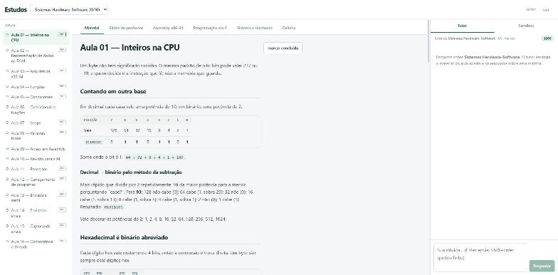

01 · Estudo & ensino
Plataforma de Estudos
acesso com loginMeu ambiente de estudos por matéria: aulas, slides sincronizados com o texto, colinha com todo o código de cada atividade, flashcards separados entre decorar e deduzir, e um tutor de IA com guardrails. Compila e roda C num sandbox isolado e guarda o progresso.
Abrir a plataforma →
código privado · 2 repositórios + docker-compose